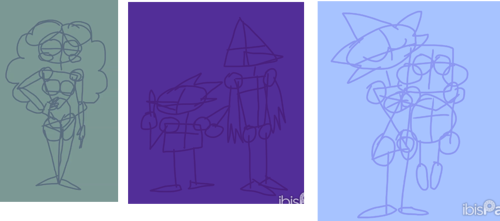
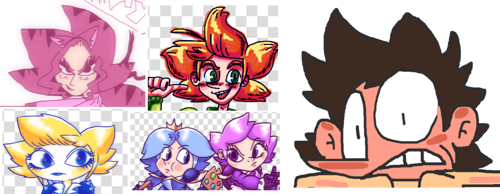

Почалося все з того, що нам мама з інтернату принесла іграшки. Там був плюшевий ведмедик, що став один із моїх найперших персонажів, Мишком.
Я із дитинства мріяв створювати мультики, це дуже вплинуло на мій стиль - він мультяшний і кумедний.
Із часом я підростав, вигадував більше персонажів, зацікавився геймдевом, почав створювати персонажів для майбутніх ігор. Вигаданих світів ставало усе більше й більше.
Великий вплив на мій стиль, я вважаю, зробили диснеївські мульти, а також стиль rubberhose. Я ще трошки позичав від аніме.
Я не дуже враховую реалізм, а анатомію лиш трохи. Каркаси для персонажів, які малюю - тупо набір криво намальваних ліній і фігурок:

Я малюю так, як хочу. Я люблю малювати персонажів у динамічних, стрибучих і веселих позах. Це мені дуже нагадує стиль рендерів бійців із Super Smash Bros. Ultimate.
Мені подобається малювати різне. Але мої персонажі зазвичай маю доволі фантастичні дизайни.
Якщо говорити за людей і гуманоїдів, у них часто намальовані забавні кольорові зачіски, на кшталт тих, що бувають у аніме:

Смішний факт: я не анімешник.
Своїх персонажів я складаю з простих фігур і даю їм впізнавані палітри: зачіска Анялу нагадує котячу голову + дівчина вся рожева, у Капітана Консолуса квадратна голова і кругле тіло, його кольори в основному це: бірюзовий, помаранчевий, сірий.